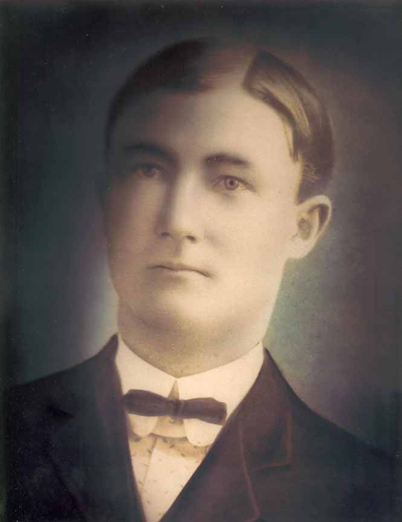
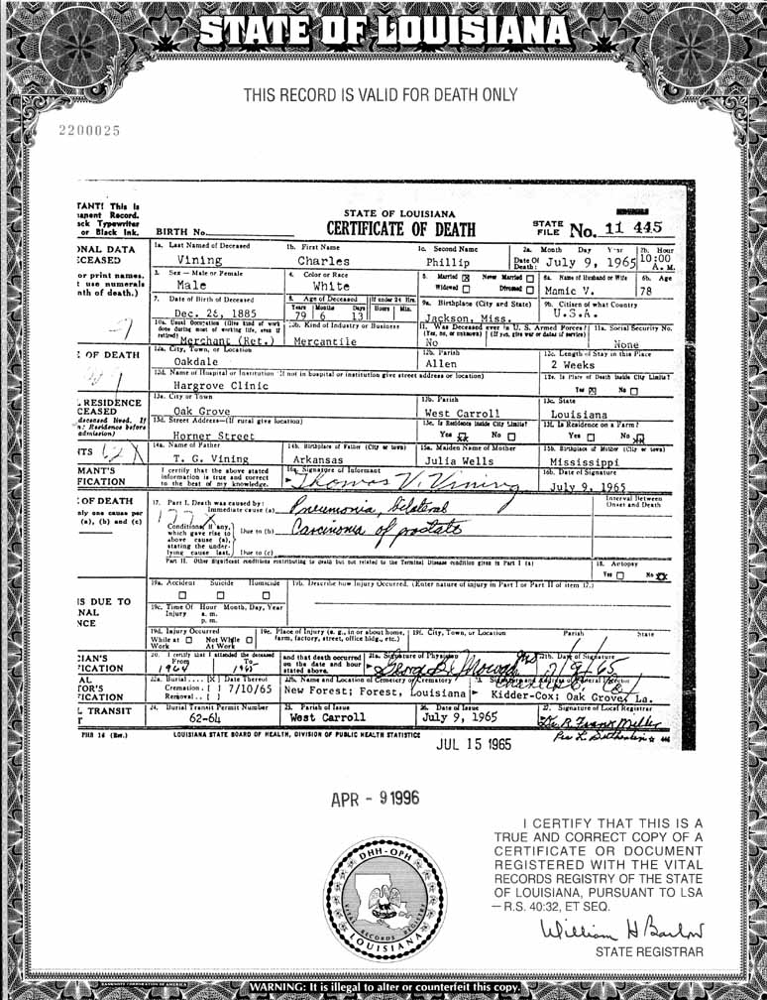
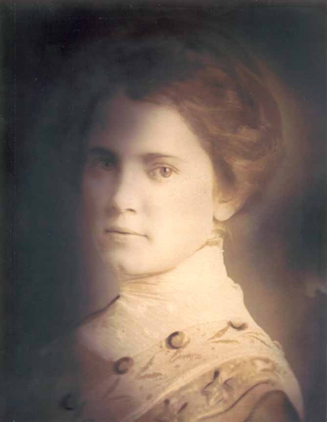
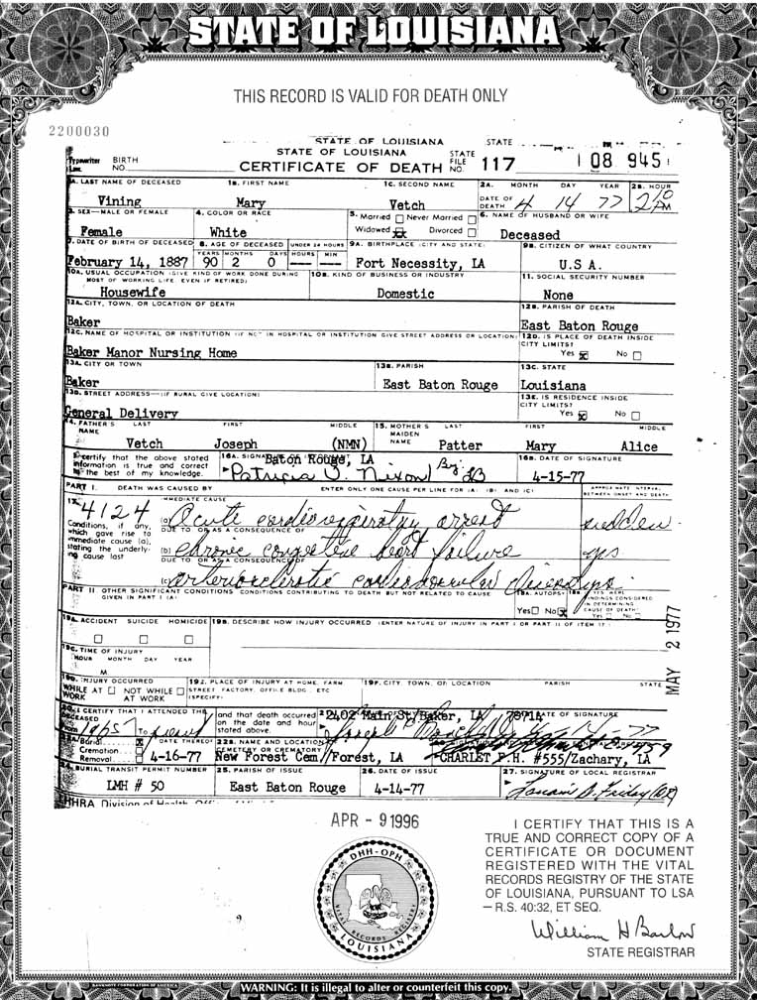
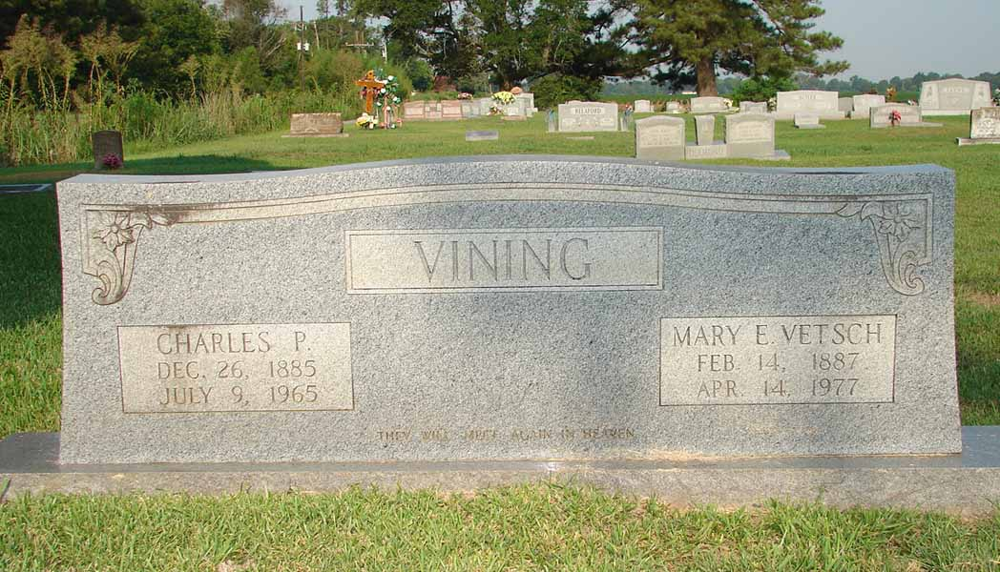
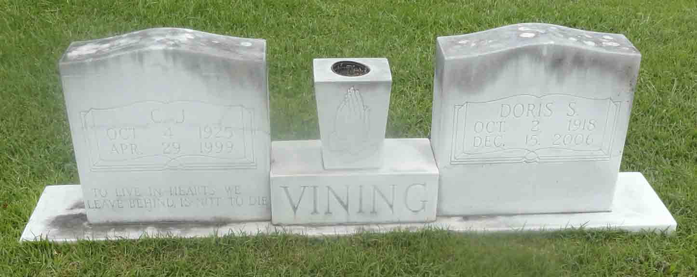

Documentation for Charles Phillip Vining - Mary Elizabeth "Mamie" Vetsch
Death Data
Charles Phillip Vining and his death certificate:


Mary Elizabeth "Mamie" (Vetsch) Vining and her death certificate:


Gravestones for Charles Phillip Vining and Mary Elizabeth "Mamie" (Vetsch) Vining, in Forest Lawn Cemetery (also called New Forest Cemetery), Forest, West Carroll Parish, Louisiana:

Gravestones for Charles Joseph Vining and Doris (Smith) Vining, son and daughter-in-law of Charles Phillip Vining and Mary Elizabeth "Mamie" (Vetsch) Vining, in New Forest Cemetery, Forest, West Carroll Parish, Louisiana (from Find A Grave):
